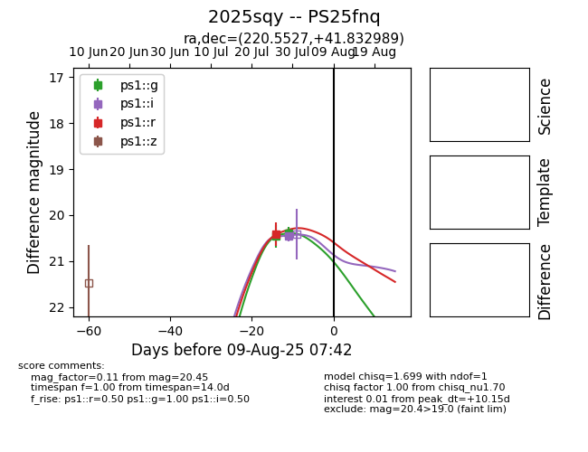

Target 2025sqy at 2025-08-09 08:07, see:
TNS: wis-tns.org/object/2025sqy
YSE: ziggy.ucolick.org/yse/transient_detail/2025sqy
alt names
2025sqy (yse,tns)
PS25fnq (panstarrs)
coordinates:
equatorial (ra, dec) = (220.5527,+41.83299)
galactic (l, b) = (73.1449,+63.03520)
photometry
last ps1::g=20.39, ps1::i=20.45, ps1::r=20.42
2 ps1::g, 1 ps1::i, 1 ps1::r detections
